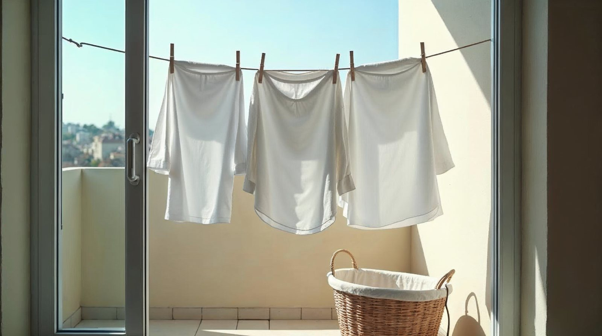
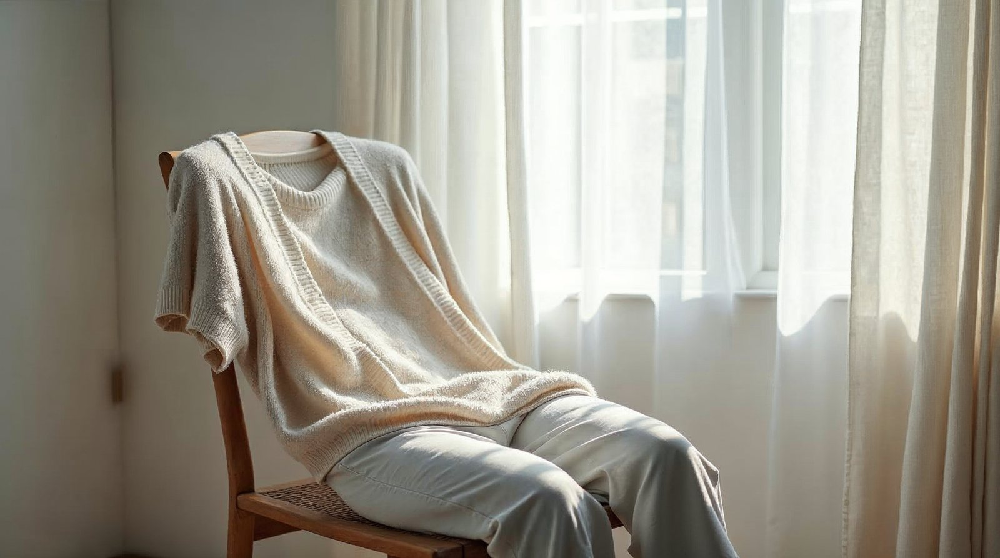

이종호 한의사 감수좋은꿈참사랑한의원 대표원장 (한의사 면허번호 19769)발행 2026-11-26 · 수정 2026-11-26
이 글의 차례
아침에 셔츠 소매에 팔을 넣다가 어깨가 '찌릿' 합니다. 버스 손잡이를 잡으려 팔을 뻗으면 어깨 바깥쪽이 시큰하고, 머리를 감으려 손을 올리면 중간쯤에서 멈칫하게 됩니다. 아주 못 견딜 정도는 아니라서 몇 달을 그냥 지내 왔는데, 요즘은 밤에 그쪽으로 눕기가 꺼려집니다.
이렇게 팔을 들 때마다 어깨가 걸리고 시큰한 통증이 오래간다면, 어깨를 감싸는 회전근개 힘줄이 예민해져 있는 경우가 많습니다. 힘줄이 찢어진 것과는 다르게, 오래 쓰고 덜 쉬면서 힘줄이 지쳐 있는 상태라고 생각하시면 이해가 쉽습니다.
저는 이럴 때 먼저 힘줄이 찢어지지 않았는지, 목에서 내려오는 통증은 아닌지, 어깨가 굳어 가는 중은 아닌지를 가립니다. 체외충격파는 그렇게 살핀 뒤 오래 이어지는 힘줄 통증에 검토할 수 있는 방법 가운데 하나입니다.
진료실에서 이런 말씀을 자주 듣습니다. "참을 만해서 그냥 뒀는데, 이게 몇 달째예요." 또 "물리치료도 받아 봤는데 그때뿐이라서요" 하시며 지친 얼굴을 하십니다. 오래 참아 오신 시간만큼 마음도 많이 지쳤을 것 같습니다.
어깨 통증은 크게 아프지 않으면서 오래 사람을 괴롭힙니다. 옷을 입고, 머리를 감고, 가방을 메는 매일의 동작마다 조금씩 신경이 쓰이니까요. 오늘은 그 '걸리는 어깨'를 어떻게 살피고, 체외충격파는 어디까지 도울 수 있는지 이야기해 보겠습니다.
왜 어깨 힘줄은 오래 아플까요
어깨는 우리 몸에서 가장 넓게 움직이는 관절입니다. 그만큼 뼈가 깊이 맞물려 있지 않고, 작은 힘줄 네 개가 둘러싸며 팔뼈 머리를 붙잡아 줍니다. 팔을 들 때마다 이 힘줄들이 쉬지 않고 일합니다.
팔을 머리 위로 자주 드는 일, 컴퓨터 앞에서 어깨가 앞으로 말린 자세로 오래 있는 일, 갑자기 시작한 어깨 운동이 겹치면 힘줄이 지나가는 좁은 길목에서 마찰과 부담이 쌓입니다. 나이가 들면서 힘줄 자체의 탄력이 조금씩 줄어드는 것도 한몫합니다.
힘줄은 근육보다 혈액이 적게 가는 조직이라 회복이 느린 편입니다. 무리한 날의 피로가 다 풀리기 전에 또 쓰고, 또 쓰는 날이 이어지면 힘줄이 예민한 상태로 머물게 됩니다. 그래서 '확 다친 기억은 없는데 몇 달째 아픈' 어깨가 생깁니다.
밤에 더 아픈 것도 흔합니다. 누우면 어깨가 눌리고, 낮 동안 쌓인 부담이 조용할 때 더 또렷하게 느껴지기 때문입니다. 잠을 설치면 몸 전체의 회복도 늦어져, 통증과 피로가 서로 꼬리를 무는 모양이 되기 쉽습니다.
찢어진 힘줄, 오십견, 목 디스크와는 어떻게 구분하나요
힘줄이 찢어진 경우에는 팔을 들어 올린 채 버티는 힘이 눈에 띄게 약해지는 경우가 많습니다. 넘어지거나 무거운 것을 들다가 '뚝' 하는 느낌이 있었다면 더 의심해 봐야 합니다. 이때는 정형외과에서 영상 검사로 손상 정도를 먼저 확인하는 것이 순서입니다.
오십견은 아프기도 하지만 무엇보다 굳는 것이 특징입니다. 제가 팔을 천천히 들어 드려도 일정 각도에서 딱 막힙니다. 힘줄 통증은 아파서 멈추지만, 도와드리면 더 올라가는 경우가 많습니다.
목에서 오는 통증은 어깨에서 팔, 손가락까지 저림이 내려오고 고개를 젖히거나 돌릴 때 통증이 달라집니다. 이런 구분은 혼자 하기 어려우니, 어느 쪽인지 헷갈리시면 그대로 말씀해 주시면 됩니다. 같이 움직여 보며 가려 봅니다.

체외충격파는 무엇을 하고, 무엇은 어려운가요
체외충격파는 피부를 절개하지 않고 몸 밖에서 짧은 압력파를 아픈 힘줄 주변에 전달하는 방법입니다. 오래 예민해진 힘줄 주변에 자극을 주어 몸이 그 자리를 다시 돌보도록 돕고, 통증 신호의 예민함을 누그러뜨리는 쪽으로 연구되어 왔습니다.
다만 반응은 사람마다, 힘줄 상태마다 다릅니다. 찢어진 힘줄을 이어 붙이거나 굳은 관절을 혼자 풀어 주는 방법은 아닙니다. 그래서 힘줄이 찢어졌는지 먼저 확인하고, 굳어 가는 어깨라면 움직임을 되찾는 일을 함께 챙깁니다.
받을 때는 두드리는 느낌이나 시큰함이 들고, 평소 아프던 자리가 더 또렷하게 느껴질 수 있습니다. 불편하면 바로 말씀해 주세요. 강도는 세게 할수록 좋은 것이 아니라, 견딜 수 있는 범위 안에서 반응을 보며 맞춥니다.
몇 번, 어떤 간격으로 할지는 진찰 뒤 함께 정합니다. 보통은 간격을 두고 받으며 그사이 어깨가 어땠는지를 듣고 다음 강도와 자리를 정합니다. 받은 뒤 하루 이틀 뻐근함이 남을 수 있어 그 변화도 함께 여쭙습니다.
체외충격파를 받는 기간에도 어깨를 완전히 묶어 두지는 않습니다. 쉬는 것과 아프지 않게 움직이는 것 사이의 균형을 그때그때 같이 맞춰 갑니다.
이런 생활에서 자주 이야기됩니다
어깨 힘줄 통증은 특별한 사고보다 매일 반복하는 동작에서 시작되는 경우가 많습니다. 그래서 저는 아픈 자리만큼 하루를 어떻게 보내시는지를 자세히 여쭙니다.
예를 들어 칠판이나 화이트보드에 판서를 오래 하는 일이라면 팔을 어깨 위로 든 채 버티는 시간이 깁니다. 마트 진열이나 물류 일처럼 높은 선반에 물건을 올리는 일도 같은 길목에 부담을 줍니다. 이런 분께는 쉬는 틈에 팔을 내려 흔들어 주는 습관부터 같이 정합니다.
수영, 배드민턴, 테니스처럼 팔을 머리 위로 크게 휘두르는 운동을 갑자기 늘린 경우도 흔합니다. 운동을 그만두라는 말보다 횟수와 강도를 어떻게 나눌지, 운동 전후에 어깨를 어떻게 풀지를 함께 이야기합니다.
사무실에서 하루 종일 마우스를 쥐고 어깨가 앞으로 말린 채 일하시는 분도 많습니다. 크게 쓰는 일은 없는데 아프다고 의아해하시지만, 작은 부담이 긴 시간 쌓이는 것도 힘줄에게는 일입니다. 책상과 의자 높이만 바꿔도 어깨가 쉬는 시간이 늘어납니다.
받기 전에 미리 알려 주세요
- 혈액을 묽게 하는 약(항응고제·항혈소판제)을 드시는 경우
- 임신 중이거나 임신 가능성이 있는 경우
- 어깨에 수술로 넣은 금속이나 인공관절, 심장박동기 같은 전자 의료기기가 있는 경우
- 치료할 자리에 상처, 습진, 염증이 있는 경우
- 최근 같은 어깨에 스테로이드 주사를 맞은 경우
해당하는지 헷갈리셔도 괜찮습니다. 약 봉투나 처방전을 가져오시면 같이 확인합니다. 드시는 약은 처방한 의사와 상의 없이 줄이거나 끊지 않습니다.
먼저 이렇게 여쭙니다
- 몇 달째인가요? 처음 아프기 시작한 무렵 새로 시작한 일이나 운동이 있었나요?
- 옷 입기, 머리 감기, 뒷주머니에 손 넣기 가운데 어떤 동작이 가장 불편한가요?
- 밤에 그쪽으로 누우면 깨시나요?
- 팔을 들어 올린 채 버티기가 어렵거나 힘이 빠지는 느낌이 있나요?
- 목을 돌리거나 젖힐 때 어깨 통증이 달라지나요? 손 저림이 있나요?
- 지금까지 받은 주사, 약, 물리치료와 그 시기는 어떤가요?
처음부터 다 기억하지 못하셔도 괜찮습니다. 생각나는 것부터 말씀해 주시면 나머지는 제가 하나씩 여쭙겠습니다.

체외충격파를 받는 날은 이렇게 흘러갑니다
먼저 지난번 이후 어깨가 어땠는지, 가장 불편했던 동작이 무엇이었는지를 듣습니다. 그다음 지난번과 같은 동작으로 팔을 들어 보며 아픈 각도를 비교합니다. 같은 동작으로 비교해야 변화를 읽을 수 있습니다.
어깨를 드러내기 쉬운 옷을 입고 오시면 편합니다. 앉은 자세에서 손을 허리 뒤로 두거나 배 위에 올려 힘줄이 드러나기 쉬운 자세를 잡고, 가장 예민한 지점을 손가락으로 짚어 확인합니다. 필요하면 초음파로 다시 봅니다.
장비는 원장이 직접 대고, 처음에는 낮은 강도로 시작합니다. 받는 중에 몇 번이고 괜찮은지 여쭙고 그 답에 따라 조절합니다. 받은 자리와 강도, 받은 뒤 느낌은 기록해 두었다가 다음에 같은 동작과 함께 비교합니다.
일상에서 먼저 해 볼 수 있는 것
- 자주 쓰는 물건을 어깨 높이 아래로 옮겨 팔을 머리 위로 드는 횟수 줄이기
- 모니터를 눈높이에 맞추고, 키보드와 마우스를 몸 가까이 두어 어깨가 앞으로 말리지 않게 하기
- 옷은 아픈 팔부터 넣고, 벗을 때는 아프지 않은 팔부터 빼기
- 잘 때 아픈 어깨가 위로 오게 눕고, 가슴 앞에 베개를 안아 팔을 받치기
아프지 않은 범위에서 어깨를 조금씩 움직이는 것은 굳지 않게 하는 데 도움이 됩니다. 몸을 앞으로 숙이고 팔을 늘어뜨린 채 작은 원을 그리듯 흔드는 정도부터 시작해 보세요. 통증이 커지는 동작은 억지로 하지 않습니다.
체외충격파를 받은 날은 무거운 어깨 운동과 세게 주무르기는 쉬시길 권합니다. 받은 자리가 평소와 다르게 붓거나 멍이 오래가면 전화로 알려 주세요.
얼마나 지켜보고, 언제 상담할까요
무리한 뒤 생긴 가벼운 어깨 통증이라면 며칠 동안 머리 위 동작을 줄이고 잠자는 자세를 바꾸며 지켜볼 수 있습니다. 쉬는 동안 조금씩 가라앉는 경우도 많습니다.
그런데 2~3주가 지나도 같은 동작에서 같은 통증이 반복되거나, 밤에 깨는 날이 늘어 낮에도 지친다면 진찰을 받아 보시길 권합니다. 몇 달째 참아 오셨다면 더 미루지 않으셨으면 합니다.
오래 참을수록 어깨는 아픈 동작을 피하려고 다른 근육을 더 쓰게 됩니다. 그러다 목과 날개뼈 주변까지 굳어 버리면 살펴야 할 곳이 늘어납니다. 일찍 오셨다고 서둘러 무엇을 하지는 않습니다. 지금 어디쯤인지 같이 확인하는 것만으로도 마음이 한결 가벼워지실 겁니다.
한의원에서 함께 살필 수 있는 경우
- 팔을 들 때 걸리고 시큰한 통증이 몇 주에서 몇 달째 이어지는 경우
- 밤에 아픈 쪽으로 눕기 어려운 날이 잦은 경우
- 어깨와 함께 목, 등, 날개뼈 주변이 굳어 있는 경우
- 영상 검사에서 힘줄이 찢어진 것은 아니라는 설명을 들었는데 통증이 남는 경우
좋은꿈참사랑한의원에서는 문진과 맥으로 몸의 상태를 먼저 보고, 어깨와 목을 함께 움직여 통증이 어디서 오는지 가려 봅니다. 필요하다고 판단될 때 초음파로 힘줄을 확인하고, 체외충격파가 맞는다고 판단되면 원내 장비(제우스·한일티엠) 가운데 부위에 맞는 것을 골라 원장이 직접 진행합니다.
어깨를 둘러싼 근육이 굳어 있으면 침, 약침, 추나를 이어서 쓰기도 합니다. 체외충격파를 할지, 몇 번 어떤 간격으로 할지, 비용은 어떤지는 진찰 뒤 이유와 함께 안내해 드립니다. 미리 궁금하시면 방문 전 전화로 확인해 주세요.
이렇게 기록해 오시면 상담이 쉬워집니다
- 가장 불편한 동작 세 가지와 그때의 불편 정도(0~10점)
- 밤에 깬 횟수와 누워 있던 방향
- 하루 중 컴퓨터, 휴대폰, 머리 위 작업을 한 시간
- 체외충격파를 받은 뒤 하루, 사흘째의 느낌
같은 동작을 같은 방식으로 기록해 두면 작은 변화도 놓치지 않게 됩니다. 기억나는 만큼만 적어 오셔도 충분합니다.
이런 증상은 먼저 확인이 필요합니다
- 넘어지거나 무거운 것을 든 뒤 '뚝' 하는 느낌과 함께 팔을 들어 올리기 어려워진 경우
- 팔을 들어 올린 채 버티는 힘이 눈에 띄게 약해진 경우
- 어깨가 빨갛게 붓고 뜨거우며 열이 나는 경우
- 팔과 손가락으로 저림이 퍼지거나 손에 힘이 빠지는 경우
- 쉬어도 밤마다 통증이 점점 심해지는 경우
이런 경우에는 체외충격파보다 정형외과에서 원인을 먼저 확인하는 것이 순서입니다. 어깨나 팔 통증이 가슴 답답함, 식은땀, 숨참과 함께 온다면 어깨가 아니라 심장 문제일 수 있으니 지체하지 말고 가까운 응급실로 가셔야 합니다.
몇 달 동안 참아 온 어깨는 그만큼 성실하게 일해 온 어깨이기도 합니다. 한 번에 해결하려 서두르기보다 어깨가 덜 애쓰도록 하루를 같이 고쳐 가 보겠습니다. 다음에 오시면 셔츠를 입을 때 어깨가 어땠는지, 밤에 몇 번 깨셨는지부터 여쭙겠습니다. 적어 오신 기록이 있다면 그 한 줄부터 같이 읽어 보겠습니다.
함께 읽으면 좋은 글
- 어깨가 아플 때 초음파로 무엇을 확인하고, 어떤 동작을 먼저 묻나요?
- 헬스장에서 어깨 운동을 한 뒤 어깨 앞쪽이 아플 때는 무엇을 먼저 확인하나요?
- 혈액을 묽게 하는 약을 먹고 있으면 체외충격파 전에 무엇을 알려야 하나요?
- 체외충격파를 받는 동안 집에서 무엇을 기록해 두면 좋을까요?
여쭙는 것
- 몇 달째인가요? 처음 아프기 시작한 무렵 새로 시작한 일이나 운동이 있었나요?
- 옷 입기, 머리 감기, 뒷주머니에 손 넣기 가운데 어떤 동작이 가장 불편한가요?
- 밤에 그쪽으로 누우면 깨시나요?
생활에서 해 볼 것
- 자주 쓰는 물건을 어깨 높이 아래로 옮겨 팔을 머리 위로 드는 횟수 줄이기
- 모니터를 눈높이에 맞추고, 키보드와 마우스를 몸 가까이 두어 어깨가 앞으로 말리지…
- 옷은 아픈 팔부터 넣고, 벗을 때는 아프지 않은 팔부터 빼기
한의원에서 함께 살필 것
- 팔을 들 때 걸리고 시큰한 통증이 몇 주에서 몇 달째 이어지는 경우
- 밤에 아픈 쪽으로 눕기 어려운 날이 잦은 경우
- 어깨와 함께 목, 등, 날개뼈 주변이 굳어 있는 경우
먼저 확인이 필요한 신호
- 넘어지거나 무거운 것을 든 뒤 '뚝' 하는 느낌과 함께 팔을 들어 올리기 어려워진 경우
- 팔을 들어 올린 채 버티는 힘이 눈에 띄게 약해진 경우
- 어깨가 빨갛게 붓고 뜨거우며 열이 나는 경우
한눈에 보는 표
| 구분 | 핵심 |
|---|---|
| 여쭙는 것 | 몇 달째인가요? 처음 아프기 시작한 무렵 새로 시작한 일이나 운동이 있었나요? 옷 입기, 머리 감기, 뒷주머니에 손 넣기 가운데 어떤 동작이 가장 불편한가요? |
| 생활에서 해 볼 것 | 자주 쓰는 물건을 어깨 높이 아래로 옮겨 팔을 머리 위로 드는 횟수 줄이기 모니터를 눈높이에 맞추고, 키보드와 마우스를 몸 가까이 두어 어깨가 앞으로 말리지 않게 하기 |
| 한의원에서 함께 살필 것 | 팔을 들 때 걸리고 시큰한 통증이 몇 주에서 몇 달째 이어지는 경우 밤에 아픈 쪽으로 눕기 어려운 날이 잦은 경우 |
| 먼저 확인이 필요한 신호 | 넘어지거나 무거운 것을 든 뒤 '뚝' 하는 느낌과 함께 팔을 들어 올리기 어려워진 경우 팔을 들어 올린 채 버티는 힘이 눈에 띄게 약해진 경우 |
자주 묻는 질문
힘줄이 찢어졌는지 한의원에서 알 수 있나요?
움직여 보는 진찰과 초음파로 힘줄 상태를 살필 수 있지만, 찢어짐이 의심되면 정형외과에서 영상 검사로 정확히 확인하시도록 안내합니다.
오십견에도 체외충격파를 하나요?
오십견은 굳는 것이 중심이라 움직임을 되찾는 일이 먼저입니다. 힘줄 통증이 함께 있으면 상태를 보고 검토합니다.
물리치료와 무엇이 다른가요?
온열이나 전기 자극은 넓은 부위를 편하게 하는 데 쓰이고, 체외충격파는 아픈 지점에 압력파를 모아 전달합니다. 상태에 따라 고르거나 함께 씁니다.
받은 뒤 더 뻐근하면 어떻게 하나요?
하루 이틀 뻐근함이 남을 수 있습니다. 그 정도와 기간을 기록해 다음 진료에서 말씀해 주시고, 붓기나 멍이 오래가면 바로 연락해 주세요.
운동은 계속해도 되나요?
아프지 않은 범위의 가벼운 움직임은 괜찮습니다. 통증을 키우는 머리 위 운동이나 무거운 운동은 진찰 뒤 함께 조절합니다.
좋은꿈참사랑한의원은 재진 때 지난번 이야기부터 이어서 여쭙니다. 진료시간과 예약은 오시는 길에서 확인하세요.
어디서 상담받을 수 있나요?
좋은꿈참사랑한의원은 서울 동작구 만양로2길 2 신성빌딩 3층·5층(서울 동작구 상도동, 7호선 상도역 3번 출구 근처)에 있습니다. 한의사 3명(이종호 대표원장, 조영기 수석진료원장, 정원영 진료원장)이 진료합니다. 진료시간은 평일 09:30~20:00(점심 13:00~14:00), 토·일·공휴일 09:30~15:00이며, 방문 전 전화로 확인을 권합니다. 예약은 네이버 예약, 카카오톡 상담, 전화 02-815-7510로 받습니다.
이 글은 일반적인 건강 정보이며 개인의 진단이나 치료를 대신하지 않습니다. 증상이 있거나 복용 중인 약이 있다면 진료를 통해 확인하세요. 치료 효과는 개인마다 다를 수 있습니다.
작성 기준: 일반적으로 알려져 있는 건강 정보를 참고해 정리했습니다(대표원장 감수). 증상 기록은 1~2주 동안 하루 1회, 비슷한 시간에 적어 오시면 지난 상태와 비교하기 쉽습니다.